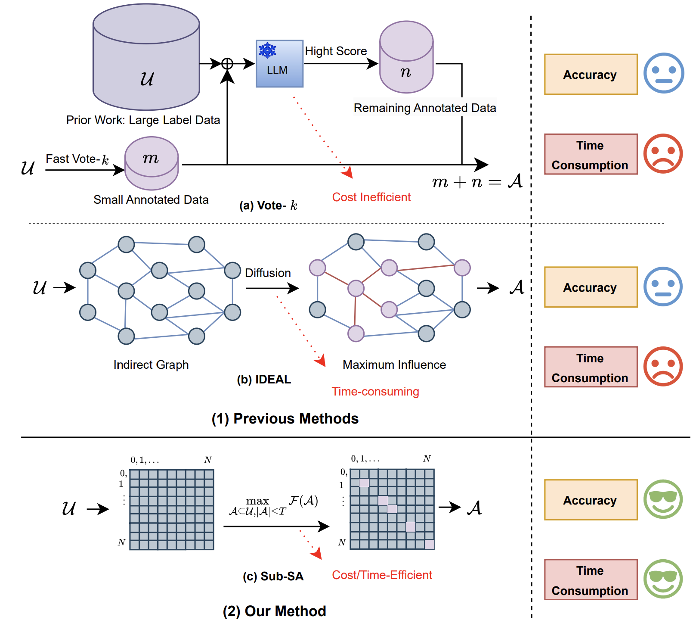
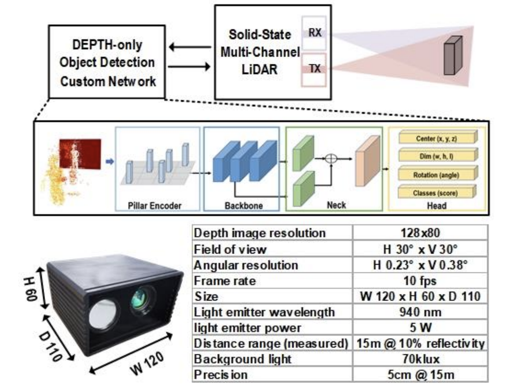
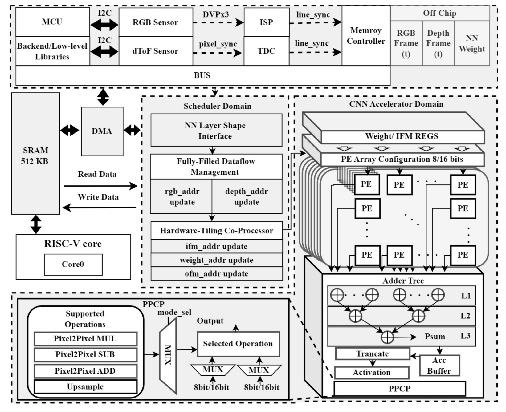

Resarch
I’m interested in machine learning systems, with a particular emphasis on efficient AI computing. My focus areas include:
- Generative AI
- Spatial-Temporal Analysis
- Decision-Making Problems
I’m looking for research collaborations; feel free to email me!
Preprint and Publications


dToF LIDAR System Using Addressable Multi-Channel VCSEL Transmitter, 128x80 SPAD Sensor, and ML-Based Object Detection for Adaptive Beam-Steering
Yifan Wu, Sifan Zhou, Miao Sun, Tao Xia, Jian Qian, Lei Wang, Shi Shi, Lebei Cui, Chill Wang, Yuan Li, Hengwei Yu, Zhihong Lin, Lei Qiu, Yajie Qin, Min Sun, Rui Bai, Xuefeng Chen, Patrick Yin Chiang, Shenglong Zhuo
CICC,
2023

A 40nm 2TOPS/W Depth-Completion Neural Network Accelerator SoC With Efficient Depth Engine for Realtime LiDAR Systems
Miao Sun, Yingjie Cao, Jian Qian, Jie Li, Sifan Zhou, Ziyu Zhao, Yifan Wu, Tao Xia, Yajie Qin, Lei Qiu, Shunli Ma, Patrick Yin Chiang, and Shenglong Zhuo
IEEE TCSII,
2023